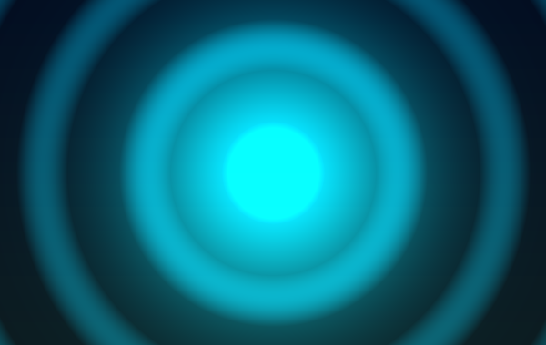
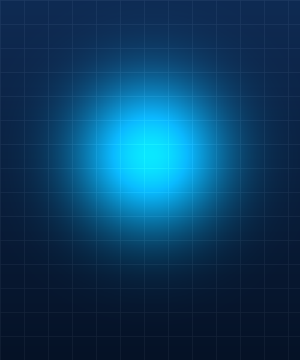
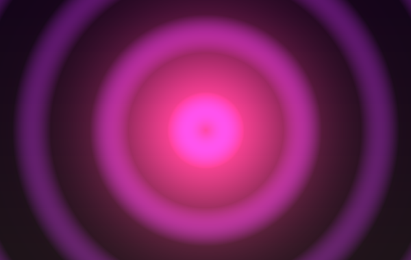
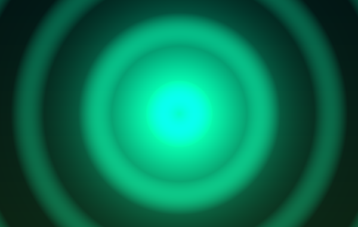
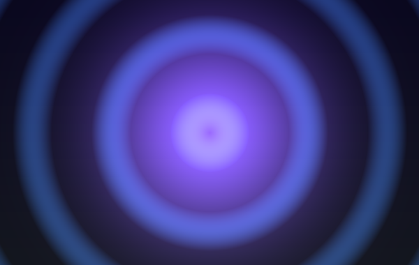

Web & Interactive

Diving into code, visual systems, and dynamic web applications. Designing interactive digital artifacts forged beneath the surface of conventional design.
Visual records and telemetry data captured from deep dive expeditions in digital design and creative computing.

Hello! I'm Elijah Becerra, a student in Santa Monica College's 10C (Fall 2026) course. I build dynamic, responsive, and visually immersive web experiences with an emphasis on bold aesthetics and clean code.
Inspired by the mysteries of the oceanic abyss and bioluminescent marine ecosystems, this portfolio serves as my digital submarine: an interactive space where you can explore my projects, experiments, and technical explorations.
Curated specimens and creative projects. Click Inspect Specimen for full telemetry or view live builds.




Duplicate an article card in index.html to display your next assignment or creation!
Hardware and software proficiencies engineered to withstand extreme digital pressures.
Have a project in mind or want to collaborate? Transmit a ping down into the trench.